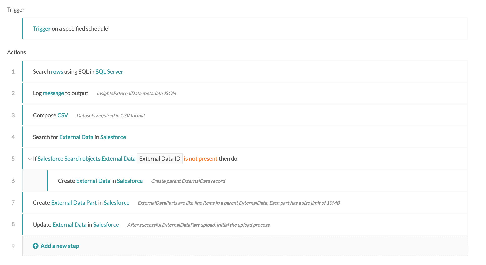

Analytics Cloud
Analytics Cloud is a cloud based analytic tool that creates powerful visualizations and dashboards from large sets of enterprise data. It is previously known as Wave Analytics.
Workato makes use of the standard Saleforce connector to upload data from external sources like ERP systems or databases.
Connector information
Refer to the Salesforce connector page for connector information.
Usage
Insights External Data and Insights External Data Part
The InsightsExternalData object allows you to upload data from external sources. This object is used to provide metadata, and manage the upload process actions like start, cancel, cleanup and check status.
The InsightsExternalData object is used together with the InsightsExternalDataPart object (which contains one or more subsets of the entire data to be uploaded). Together, they can be used to programmatically upload large datasets in parts. Finally, an upload is triggered to process the data parts into a dataset in your Analytics Cloud instance.
More information is available from the Analytics External Data API Developer Guide.
Insights External Data Object
Data uploads must be accompanied by JSON Metadata definition and must be base64 encoded. More information is available from the External Data Format Reference.
Data Format
The following is an example dataset in CSV format.
Id,Email,Name
123,john@doe.com,John Doe
124,marry@poppins.com,Mary Poppins
CSV data guidelines are available here.
Metadata JSON
The following is an example of the metadata in JSON format.
{
"fileFormat": {
"charsetName": "UTF-8",
"fieldsEnclosedBy": "\"",
"fieldsDelimitedBy": ",",
"numberOfLinesToIgnore": 1
},
"objects": [
{
"connector": "Wave_Analytics_Sample",
"description": "",
"fullyQualifiedName": "Lead",
"label": "Lead",
"name": "Lead",
"fields": [
{
"fullyQualifiedName": "Lead.Id",
"label": "Lead ID",
"name": "Id",
"isSystemField": false,
"isUniqueId": true,
"isMultiValue": false,
"type": "Text"
},
{
"fullyQualifiedName": "Lead.Email",
"label": "Lead Email",
"name": "Email",
"isSystemField": false,
"isUniqueId": false,
"isMultiValue": false,
"type": "Text"
},
{
"fullyQualifiedName": "Lead.Name",
"label": "Lead Name",
"name": "Name",
"isSystemField": false,
"isUniqueId": false,
"type": "Text"
}
]
}
]
}
Insights External Data Part Object
Requirements:
- Create InsightsExternalDataPart objects (<10MB each)
- External data must be in form of CSV file and base64 encoded.
Initiate data upload
After successfully completing all desired Insights External Data Parts, Update the Requested Action field in the InsightsExternalData record to "Process".
Managing upload process
After initiating a data upload process (updating Requested Action field to "Process"), no more edits are allowed on the objects, except to request a cancelation.
Example recipe
Let's put everything together into the following recipe.
 Analytics Cloud recipe. Example recipe
This recipe performs a daily upload from SQL Server database to a dataset in Analytics Cloud. The recipe can be broken down to the various steps mentioned before.
- Retrieving data from external data source
- Defining a metadata JSON
- Preparing data from external data source into CSV format
- Create an External Data record
- Upload Insights External Data Part(s)
- Initial upload process by updating
Requested Actionfield to "Process" in External Data record.